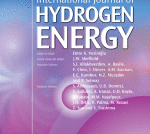
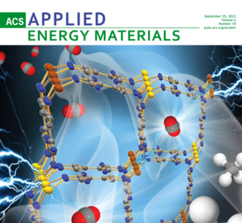
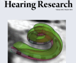

The Journal of the Acoustical Society of AmericaVol. 157, 554-568; 2025
Exploration of the dynamics of otic capsule and intracochlear pressure: Numerical insights with experimental validation
Ivo Dobrev, Jongwoo Lim, Namkeun Kim, Johannes Niermann, Christof Röösli, Flurin Pfiffner
2025

International Journal of Hydrogen EnergyVol. 52, 32-45; 2024
The utilization of rice straw (Oryza Sativa L.) as a green catalyst in the enhanced production of hydrogen via the thermochemical conversion process of shrimp farm sludge
Thien Khanh Tran, Cuc Kim Trinh, Gia Hong Tran, Truc Linh Luong, Anh Thy Nguyen, Hoang Jyh Leu, Vinh Dien Le, Namkeun Kim
2024

ACS Applied Energy MaterialsVol. 6, 9455-9465; 2023
Preparation of a Robust and Highly Active Nonmagnetic Impregnated Cobalt/Carbon-Based Electrocatalyst for Hydrogen Production from the Electrolysis of Seawater
Thien Khanh Tran, Cuc Kim Trinh, Huu Vinh Trinh, Hanh Thi Truong, Rizwan Safdar, Gia Hong Tran, Hoang Jyh Leu, Namkeun Kim
2023

Hearing ResearchVol. 429, 108699; 2023
Reference Velocity of a Human Head in Bone Conduction Hearing: Finite Element Study
Jongwoo Lim, Ivo Dobrev, Namkeun Kim
2023
Frontiers in NeuroscienceVol. 17, 1-10; 2023
Effect of closing material on hearing rehabilitation in stapedectomy and stapedotomy: A finite element analysis
Jongwoo Lim, Woonhoe Goo, Dae Woong Kang, Seung Ha Oh, Namkeun Kim
The Preparation of Eco-Friendly Magnetic Adsorbent from Wild Water Hyacinth (Eichhornia crassipes): The Application for Removing Lead Ions from Industrial Wastewater
Thien Khanh Tran, Quang Dung Le, Thi Muoi Vo, Minh Quang Diep, Thanh Duy Nguyen, Hau Huu Huynh, Quoc Khanh Ly, Namkeun Kim
2022
The Journal of the Acoustical Society of AmericaVol. 151(3), 1593-1606; 2022
Wave propagation across the skull under bone conduction: Dependence on coupling methods
Tahmine S. Farahmandi, Ivo Dobrev, Namkeun Kim, Jongwoo Lim, Flurin Pfiffner, Alexander M. Huber, Christof Röösli
2022
Applied EnergyVol. 310, 118552; 2022
Design of portable hydrogen tank using adsorption material as storage media: An alternative to Type IV compressed tank
Dong ho Nguyen, Ji Hoon Kim, Thi To Nguyen Vo, Namkeun Kim, Ho Seon Ahn
2022
Hearing ResearchVol. 421, 108337; 2022
Development of a finite element model of a human head including auditory periphery for understanding of bone-conducted hearing
Jongwoo Lim, Ivo Dobrev, Christof Röösli, Stefan Stenfelt, Namkeun Kim
2022
International Journal of Precision Engineering and ManufacturingVol. 23, 195-204; 2022
Characterization of circumference and internal pressure of a penis by using stretchable capacitive sensors and a penis dummy for diagnosing erectile dysfunction
Sanghun Jeong, Woonhoe Goo, Bummo Ahn, Young Eun Yoon, Sang Hyup Lee, Namkeun Kim, Yeongjin Kim
2022
EnergyVol. 224, 120180; 2021
Prognosis of combustion instability in a gas turbine combustor using spectral centroid & spread
Seongpil Joo, Jongwun Choi, Min Chul Lee, Namkeun Kim
2021
Experimental Thermal and Fluid ScienceVol. 123, 110340; 2021
Zero-crossing rate method as an efficient tool for combustion instability diagnosis
Seongpil Joo, Jongwun Choi, Namkeun Kim, Min Chul Lee
2021
International Journal of Hydrogen EnergyVol. 46(27), 13976-13984; 2021
The production of hydrogen gas from modified water hyacinth (Eichhornia Crassipes) biomass through pyrolysis process
Thien Khanh Tran, Namkeun Kim, Hoang Jyh Leu, Minh Phuc Pham, Nhat Anh Luong, Hoang Khiem Vo
2021
Materials Chemistry and PhysicsVol. 261, 124221; 2021
Electrochemical preparation and characterization of polyaniline enhanced electrodes: An application for the removal of cadmium metals in industrial wastewater
Thien Khanh Tran, Namkeun Kim, Quoc Cuong Le, Minh Tam Nguyen, Hoang Jyh Leu, Kim Ngan Vo Thi
2021
Scientific ReportsVol. 11, 3043; 2021
A novel diagnostic method based on filter bank theory for fast and accurate detection of thermoacoustic instability
Seongpil Joo, Jongwun Choi, Namkeun Kim, Min Chul Lee
2021
ORLVol. 83(3), 172-180; 2021
Relationship between Endolymphatic Hydrops and Symptoms of Meniere Disease in Acoustic Hearing
Yoonkyung Oh, Jongwoo Lim, Young Sang Cho, Namkeun Kim
2021
IEEE Transactions on CyberneticsVol. 51(5), 2761-2772; 2021
Identity recognition based on bioacoustics of human body